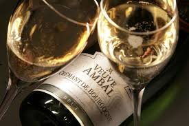
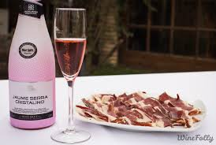
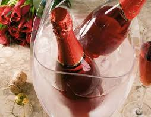
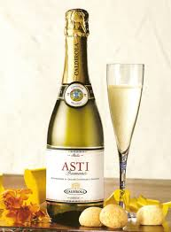
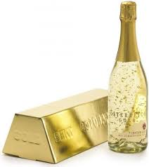
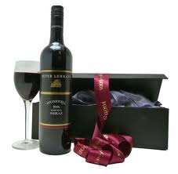

SPARKLING WINE
CHAMPAGNEChampagne is probably the most popular and best known sparkling wine worldwide. Champagne is savored in moments of celebration, and the prices reach the levels of its worldwide fame. It is produced in the champagne region of France. Though some sparkling wines in America and England are branded as champagne (with a small 'c'). Three types of grapes of grapes - Pinot Noir, Chardonnay and Pinot Meaner. There are blend together through the method Champenoise to create the amazing taste and smell associated with Champagne. Dom Perignon is probably the most well-known brand of Champagne. |
|
|  | CREMANTProduced mostly in France, this type of sparkling wine is mostly known for its low amounts of carbon dioxide. Traditionally, carbon dioxide pressures were used for the crÂmant hence giving it a creamy mouth feel. |
|  | CAVAThe Spanish have their delicious version of Sparkling wine, known as Cava, mostly coming as Brut and Semi-Sec, and as white and rose wines. This is a Spanish sparkling wine that color are white or pink. It uses the traditional/ champenoise method but with different types of grapes from those used in Champagne. Macabeo, Parellada, Xarello, and Chardonnay grapes are used. There are many cava sparkling wines varieties depending on the level of dryness. |
|  | ESPUMATEThis is a Portuguese sparkler that can be produced anywhere is Portugal. It can be made using either the traditional method or the charmat method. Espumosos is a variety that is made by injection the carbon dioxide- it is low level and cheap sparkling wine. |
|  | ASTIA sweet Italian sparkler made in the region of Asti using the charmat method. Muscat grapes are used in the process to create this wine that has a sweet flavor and low alcohol content of about 8%. |
 |
PROSECCOThis is an Italian sparkler that is produced through the Charmat method just like the Asti, but it is dryer and sweeter due to the prosecco grapes used. It comes in lightly sparkling and fully sparkling versions. |
 |
TRENTO DOCThis is yet another Italian Sparkling wine and can be distinguished from the rest due to its yellow straw color. It is produced using the Chardonnay, Pinot Blanc, Pinot Noir and Pinot Meunier grapes through the méthode traditionnelle. It is also unique since its minimum alcohol level is above 11%. |
SEKTThis is sparkling wine produced in Germany using the Riesling, Pinot Gris, and Pinot Blanc grapes. This type of sparkling wine is normally produced using the Charmat method. However, the cheap varieties are produced through carbon dioxide injection; and methode traditionnelle is used for the premium brands. Sekt is also found in Austria but is produced through the méthode champenoise using Gruner Veltliner and Welschriesling grapes hence the golden color. |
|
|  | PEZSGAThis is a Hungarian sparkling wine that is made using either the charmat or the traditional method. International and native grapes are used in the production and may range from Chardonnay, Riesling, Pinot noir, Muscat Lunel, Muscat Ottonel to Furmint, Olaszrizling, Furmint, Kekfrankos, and Keknyelu grapes. |
 |
SOVETSKOYE SHAMPANSKOYEThis is Russian Champagne named as the "Soviet Champagne". The name remained even after the disintegration of the Soviet Union since it was already a popular brand among the rich. It is also produced in Ukraine, Moldova, Armenia and Belarus. It is mostly dry though a sweet version is produced in Moldova by using the Muscat grapes. |
|  | SHIRAZThis is an Australian sparkler that uses the traditional method and Shiraz grapes. The red sparkling wine is sweet although there are dry and tannic varieties. |